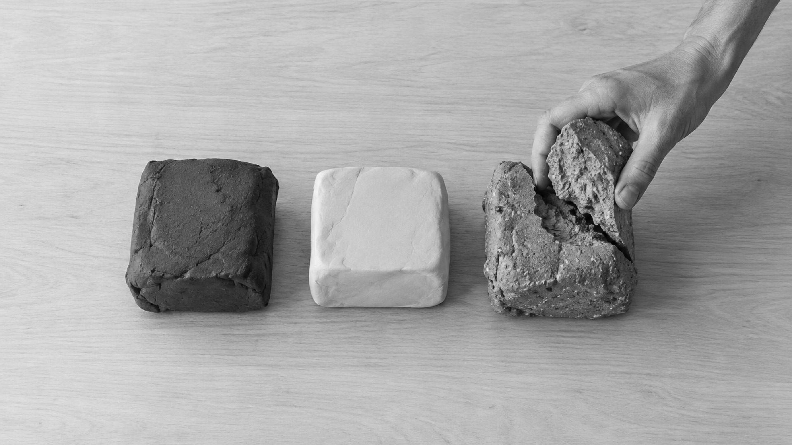

課程總長4 小時 20 分
課程總長4 小時 20 分
Craftory 手感工藝線上學院｜設計稿 05
設計 Guideline
瑞士國際排版：黑白色系＋亮紅點綴（純白底、深黑文字、瑞士紅）。嚴格的網格對齊，播放清單去除多餘裝飾，以純粹的排版字級架構層級。
概覽
把 Craftory 當成一張 1960 年代的瑞士課程海報來排：白紙、黑字、一點紅。版面全部由 12 欄網格決定，資訊的層級只靠字級、字重、對齊與留白，不靠卡片、陰影、圓角或色塊。
照片一律是明亮、方正的黑白「客觀攝影」，讓瑞士紅成為畫面上唯一的顏色。紅色只回答兩件事：你現在在哪裡（播放中的單元、學習進度、播放進度）、下一步按哪裡（每個區塊唯一的主要按鈕）。
頁面
- 設計 Guidelineguideline.html
- 首頁index.html
- 課程列表courses.html
- 課程詳情（從零開始的手捏陶）course.html
- 課程播放／學習頁（3-2）learn.html
網格決定一切
12 欄、32px 欄間距、8px 間距單位。每個文字區塊的起點都壓在欄線上，標題左 4 欄、內容右 8 欄的非對稱排法最常用。
字級就是層級
同一組無襯線黑體，字級拉開差距（120 → 56 → 40 → 20 → 16 → 13），字重只有 400／500／700，900 只給最大的標題。左齊、不齊右。
線取代框
不用卡片底色、陰影、圓角。區塊開頭一條 2px 墨黑線，清單項目之間 1px 細線；浮層（對話框、下拉選單）用墨黑框線和頁面分開。
色彩
色票的唯一來源是 scss/_variables.scss。對比度以 WCAG 公式計算；文字對底色 ≥ 4.5:1，圖示與框線 ≥ 3:1。
品牌色與中性色
純白 Paper
#FFFFFF$paper
頁面底色、白色標題方塊
墨黑 Ink
#111111$ink
主文字、結構線、深色按鈕。對純白 18.9:1
瑞士紅 Swiss Red
#E30613$swiss-red
主要按鈕、目前單元、進度、焦點環。紅字對純白 4.88:1、白字在紅底 4.88:1
深紅
#B8000F$swiss-red-deep
主要按鈕 hover／active。對純白 6.9:1
石墨灰 Graphite
#595959$graphite
次要文字、未開始的單元。對純白 7.0:1、對霧面 6.3:1
中灰
#767676$ash
placeholder、麵包屑分隔。對純白 4.54:1（不放在霧面上）
細線灰 Hairline
#D9D9D9$hairline
清單之間的 1px 細線（裝飾，1.4:1，不承載資訊）
欄線
#EBEBEB$grid-line
可見網格的欄線（裝飾）；深色底用 #262626
霧面 Fog
#F2F2F2$fog
進度條軌道、退費提示底、停用欄位。墨黑字 16.9:1
放映黑 Screen
#0A0A0A$screen
播放器、頁尾、「正在播放」方塊。白字 19.8:1
影音專用色（以放映黑為底）
| 用途 | 樣本 | 值 | 對比度 |
|---|---|---|---|
| 播放器底色 | $player-bg #0A0A0A | 控制列白字 19.8:1 | |
| 進度條：已播放 | $player-played 瑞士紅 | 對放映黑 4.3:1（非文字 ≥ 3:1） | |
| 進度條：已緩衝 | $player-buffer 白 55% | 對放映黑 ≥ 3:1 | |
| 進度條：軌道 | $player-track 白 28% | 裝飾（位置由已緩衝與播放頭表達） | |
| 已觀看位置標記、播放頭 | 純白 2px 刻度＋方形播放頭 | 19.8:1 | |
| 次要文字（片長） | $screen-muted #A6A6A6 | 對放映黑 8.1:1 | |
| 試看徽章 | 試看 | 墨黑細框＋墨黑字 | 18.9:1 |
| 鎖定 | 石墨灰鎖頭＋「鎖定」（視覺隱藏） | 7.0:1 |
Bootstrap 主題色與語意
| Bootstrap | 對應 | 本風格的語意 |
|---|---|---|
$primary | 瑞士紅 | 主要按鈕、進度條（.progress-bar） |
$dark／$success／$info／$warning | 墨黑 | 不另外加綠、藍、橘：已完成用 ✓＋文字、提示用圖示＋粗體 |
$danger | 瑞士紅 | 錯誤：表單錯誤框線與訊息、影片載入失敗的警示圖示 |
$secondary | 石墨灰 | 次要文字 |
$light | 霧面 | 軌道、提示底 |
$component-active-bg | 墨黑 | 選中（核取方塊、分頁按鈕、下拉選單）用墨黑，不用紅 |
字級階層
全站只有一組無襯線：Inter Tight（英數、價格、時間、單元編號、大數字）＋ Noto Sans TC（中文）。數字一律 font-variant-numeric: tabular-nums，上下對齊。數字為 1440px 的值，手機版見括號；h1～h3 在 1200px 以下由 Bootstrap 的 RFS 自動縮小。
探索課程
把想學很久的
從零開始的手捏陶｜
想從哪一雙手開始？
第 3 章 手捏成形：從土球到碗
本段重點是拇指下壓時維持約 45 度，底部厚度保留 0.8cm。壓太快會讓底部變薄，入窯容易裂。
1,845 人正在學 預估還需 2 小時 10 分
4.950%NT$ 2,480
1-2 08:42 4 小時 20 分 02:10 / 08:42
間距與網格
8px 間距單位、4px 基線（內文 16／28px）。Bootstrap 的 $spacers 擴充到 9 階，.p-6、.gy-6 這類工具類別都能用。
間距尺度 $spacers
- 14px
- 28px
- 316px 欄位、清單項目
- 424px 卡片、購買卡內距
- 532px 欄間距
- 648px 標題到內容
- 764px 區塊（手機）
- 896px 區塊（桌機）
- 9128px 底部 CTA
固定尺寸
- 容器最大寬
- 540／720／960／1140／1320px（sm～xxl），左右內距 20px
- 網格
- 12 欄、欄間距 32px（
$grid-gutter-width） - 頁首高度
- 73px（上下內距 14px＋44px 控制項＋1px 底線，
$site-header-height） - sticky 位移
- 97px＝頁首＋24px：購買卡、學習頁側欄、篩選側欄的
top，以及錨點的scroll-padding-top（$sticky-top-offset） - 區塊上下留白
- 手機 64px、桌機 96px（
.section）；課程詳情各區塊之間 96px - 觸控目標
- 所有按鈕、連結列、篩選選項、單元列 ≥ 44px
12 欄網格與常用的非對稱分割
課程列表、首頁「學得完的理由」、Guideline 與頁尾的背景都畫著這 12 條欄線（.grid-guides）。按左側的「顯示網格」可以把 12 欄覆蓋在整頁上，檢查對齊。
圓角陰影
本風格不用圓角、也不用陰影。層級改用三種方式建立：線的粗細、底色（只有霧面與放映黑兩種）、字級。
圓角 0
按鈕、輸入框、標籤、播放器、購買卡、對話框、圖片全部直角（$border-radius: 0）
圓形 50rem
只有文字頭像、講師頭像、radio 是圓的（$border-radius-pill）
陰影 none
$enable-shadows: false，$box-shadow 一律 none；浮層用 1～2px 墨黑框線
用線分層
6px 墨黑購買卡上緣（頁面上最重要的模組）
2px 墨黑區塊開頭、章節開頭、對話框外框、操作列上緣
1px 墨黑表單框線、工具列底線、資訊標籤列、FAQ
1px 細線灰單元之間、清單項目之間（裝飾，不承載資訊）
2px 墨黑虛線「設計稿狀態示意」與正式內容的分隔
元件狀態規範
下面的 hover、focus 是用示範專用的 .is-hover、.is-focus 固定住的畫面；實際頁面上由滑鼠與鍵盤觸發。焦點一律是 瑞士紅 2px 外框＋2px 白色間隙。
按鈕
| 種類 | 預設 | hover | focus | active | 停用 |
|---|---|---|---|---|---|
主要.btn-primary |
|||||
次要.btn-outline-dark |
|||||
深色.btn-dark |
|||||
文字連結.btn-text |
看更多課程 | 看更多課程 | 看更多課程 | 看更多課程 | 看更多課程 |
播放器圖示.player-btn |
「免費試看」與「立即購買」的層級：Notion 要求免費試看的門檻低於立即購買。課程卡上只放「▶ 免費試看」（次要、墨黑細框），價格是一般文字，不放購買按鈕；購買只出現在課程詳情的購買卡，而且整頁只有它是瑞士紅的主要按鈕。首頁 Hero 的「▶ 免費試看第一章」是首頁唯一的主要按鈕。
表單
密碼至少需要 8 碼
分頁籤、切換、Accordion
分頁籤（可實際切換；hover 灰底線、選中 3px 墨黑底線）
選中的分頁
第 2 個分頁
第 3 個分頁
切換（btn-check＋btn-group：選中墨黑底白字）
Accordion（展開＝「－」、收合＝「＋」）
可以，這堂課就是為第一次碰土的人設計的。
永久觀看，課程日後更新的單元也會一併開放。
課程卡、工藝情境卡
預設
課程總長4 小時 20 分
hover：封面微放大、左下紅色播放方塊、標題底線
課程總長4 小時 20 分
focus：整張卡外框瑞士紅
課程總長4 小時 20 分
情境卡：hover／focus

12 門課
最短 4 小時 20 分完課
【一只每天
陶藝手捏入門
規則
作品名稱放在圖片下方，不壓在照片上。課程數與最短完課時間是墨黑色帶：992px 以上 hover／focus 時從圖片底部升起；992px 以下（觸控裝置）直接顯示。
單元列（兩種章節清單）
課程詳情（未購買／已購買）
學習頁側欄
章節列： 已完成（4／4）、 目前章節（1／6）、 部分完成（2／4）、 未開始（0／5）。圖示旁都有「已完成 N／M」的文字。
徽章
- 試看試看
- 鎖定鎖定
- 入門進階難度
- 陶藝分類
- 4 小時 20 分時長（封面右下）
- 已完課已完課
- 學習進度 78%學習進度
- 正在播放正在播放（全站唯一的紅色標籤）
- 草稿已上架已下架講師課程狀態
學習進度、評價分佈、星等
已完成 14／28 單元 ‧ 50%預估還需 2 小時 10 分
學習進度用瑞士紅（「你在哪裡」）；評價分佈與星等用墨黑（資料，不是你的狀態）。
播放器
未播放（課程詳情預設）

播放中（控制鈕 hover 紅底、focus 紅框）
載入中
影片載入中
載入失敗
影片暫時無法播放，請檢查網路後重新整理。
控制列常駐，不會自動隱藏（鍵盤與觸控使用者也看得到）。576px 以下隱藏音量滑桿與播放速度，只留播放、時間、進度條、字幕、全螢幕。
Toast、Modal、空狀態
Toast：續看提示（學習頁預設顯示，可關閉）
已為你跳到上次觀看的 07:18，
Modal：登入（從購買按鈕開啟）
兩顆按鈕都打開同一個對話框；從購買按鈕開啟時多一行未登入提示。
Modal：鎖定提示
狀態與空畫面文案
Notion 的 7 則狀態文案，每則配上它的元件。頁面上的位置見各頁底部的「設計稿狀態示意」。
1 未登入點擊購買課程詳情：登入對話框
2 未購買點擊鎖定單元課程詳情：鎖定提示
3 我的課程為空學習頁：空狀態
你還沒有進行中的課程，先從一支免費試看開始。
探索課程4 課程列表篩選無結果課程列表：空狀態
這個條件下目前沒有課程，試著放寬難度或價格範圍。
5 影片載入失敗學習頁：播放器錯誤狀態
影片暫時無法播放，請檢查網路後重新整理。
6、7 講師課程草稿／已下架講師課程狀態卡（元件示意，與前台課程的上架狀態無關）
-
草稿
植鞣皮革入門｜
縫一只用十年的卡夾 這門課還缺少課程封面與售價，補齊後就能上架。
-
已上架
從零開始的手捏陶｜
做出第一只日用食器 -
已下架
銀飾鍛敲入門｜
從一條銀線到一只戒指 這門課目前已下架，已購買的學生仍可繼續觀看。
其他動態文案
- 續看提示已為你跳到上次觀看的 07:18，[從頭播放]（學習頁預設顯示）
- 課程問答空狀態這個單元還沒有人提問，當第一個吧。（學習頁「課程問答」分頁）
- 完成一章第 2 章完成了，土已經揉好，接下來進入最有趣的成形。（學習頁狀態示意）
- 全課完成你完成了整門課，把你的第一只碗拍下來吧 [上傳我的作品]（學習頁狀態示意）
RWD 斷點
| 斷點 | 寬度 | 容器 | 主要變化 |
|---|---|---|---|
| xs | < 576px | 滿寬（左右 20px） | 單欄；橫向捲動列貼齊螢幕兩側；上一／下一單元只留箭頭；播放器隱藏音量與速度 |
| sm | ≥ 576px | 540px | 課程網格 2 欄；學得完的理由 2 欄 |
| md | ≥ 768px | 720px | 背景欄線出現；講師、成品區塊左右排 |
| lg | ≥ 992px | 960px | 頁首展開；8:4 兩欄；篩選變側欄；學習頁抽屜變側欄；Hero 文字壓在大圖上 |
| xl | ≥ 1200px | 1140px | 評價總覽與列表左右排；字級到桌機值 |
| xxl | ≥ 1400px | 1320px | 版心固定；1920px 時滿版區塊（Hero、紅色 CTA、頁尾）仍滿版，內容對齊版心 |
| 頁面 | 992px 以上 | 992px 以下 |
|---|---|---|
| 首頁 | 全螢幕大圖，白色標題方塊在左下、「正在播放」方塊在右下；熱門課程 4 欄 | 大圖高 320～480px，標題方塊往上壓住圖片下緣；「正在播放」移到下方；熱門課程橫向捲動（卡寬 80%／45%）；情境卡 2 欄、資訊直接顯示 |
| 課程列表 | 左 3 欄篩選（sticky）＋右 9 欄、2 欄課程卡 | 篩選變成左側抽屜（.offcanvas-lg），工具列多一顆「篩選」；576px 以下課程卡 1 欄 |
| 課程詳情 | 8:4，購買卡 sticky 陪著整頁 | 單欄：播放器 → 課程資訊 → 購買卡 → 區塊二～六；成品圖、講師照片在 768px 以下改上下排 |
| 學習頁 | 8:4，側欄 sticky、內部捲動 | 側欄變成底部抽屜（.offcanvas-lg.offcanvas-bottom）；操作列貼齊畫面底部；「課程章節 50%」按鈕開抽屜 |
Do／Don't 對照
Do
NT$ 2,480免費試看
課程卡的「免費試看」比價格、購買更容易按到。
Don't
NT$ 2,480立即購買
卡片上只放「立即購買」。
Do
已完成 播放中 未開始
單元狀態用圖示＋文字。
Don't
只用顏色區分已完成與未開始。
Do
1x
控制列常駐、白色圖示對比足夠，鍵盤 focus 有紅框。
Don't
控制列完全隱藏，或用低對比的灰色圖示。
Do
從零開始的手捏陶｜
課程名稱在「｜」之後換行（.text-phrase＋<wbr>）。
Don't
從零開始的手捏陶｜做出第一只日用食器
名稱在詞中間被拆開，或刪掉「｜」後半段。
Do
一個區塊只有一個紅色主要按鈕。
Don't
兩顆按鈕同樣強調。
Do
- 入門
- 6 章 28 單元
- 總長 4 小時 20 分
資訊標籤列拆成獨立項目，用細線分隔。
Don't
陶藝 · 入門 · 6 章 28 單元 · 總長 4 小時 20 分 · 4.9
用「·」把所有資訊串成一長串。
Do
本月最多人開始的課
文案用 Notion 原文，需要小標時用中文。
Don't
MOST LOVED THIS MONTH
本月最多人開始的課
使用 wireframe 的英文眉標或佔位文字。
Do
- 3-1土球該多大08:06
- 3-2從土球到碗11:24
播放清單只用線與字級分層，紅色只給目前單元。
Don't
3-1 土球該多大3-2 從土球到碗
每個單元包成圓角卡片、加陰影或整列紅底反白。
招牌元素
無裝飾播放清單
Notion：「播放清單去除多餘裝飾，以純粹的排版字級架構層級」。課程詳情的章節 Accordion 與學習頁側欄共用 components/_curriculum.scss。
- 只有兩種線：章節開頭 2px 墨黑、單元之間 1px 細線灰。不用底色、陰影、圓角，也不整列反白。
- 層級只靠字級與字重：章名 20px 粗體 → 單元名 16px → 編號、片長 14px 等寬數字。
- 每一列對齊同一組欄位：編號｜名稱｜狀態｜片長，數字靠右、上下對齊。
- 紅色只出現在「播放中」的那一列；其他狀態用 ✓、○、鎖頭與「試看」細框標籤。
- 展開收合用「＋／－」，不用箭頭。
可見的網格
在 .container 加上 .grid-guides（深色底用 .grid-guides-dark），背景就會畫出 12 條欄線，文字的起點壓在線上。只在 768px 以上顯示。
- 只用在「標題區」與「說明性」的區塊：課程列表頁首、首頁學得完的理由、Guideline、頁尾。
- 有照片、播放器或密集資訊的區塊不加（線會變成雜訊）。
- 欄線用 #EBEBEB，比細線灰更淡，永遠在內容後面（z-index −1）。